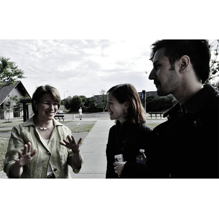

XTV was a grass roots media project and organization started by Zander and Norell, which brought other creative people together to help capture various events and things which would not normally receive press coverage. They went on to cover topics concerning the community and documented some political events with Young Progressive Majority Minnesota. Some highlights include interviewing Jacob Frey, who currently resides on the 3rd Ward City Council of Minneapolis, to MN Senator Amy Klobuchar, to renowned media icon and legend Bill Moyers himself, in cooperation with CSPAN network.
-
We were invited by YPM to join a private event with special guest and media icon, Bill Moyers.
The event took place at a lovely home on Summit Hill in Saint Paul, MN in the summer of 2011. Bill Moyers was present in support of democracy reform with Ranked Choice Voting -

Norell interviewing Jacob Frey at a YPM fundraising event where we also interviewed Minnesota Senator Amy Klobuchar.
Jacob Frey is now on the Minneapolis City Council of the 3rd Ward. -

Bill Moyers with YPM and Ranked Choice Voting in Saint Paul, Minnesota.
CSPAN was also broadcasting the event. Norell represented XTV when she posed an interview question for Bill Moyers. -

We were with protestors at the State Capital on Thursday, June 30th, 2011.
Minnesota workers came to take a stand against the threat of a government shutdown that would cut thousands of jobs and devastate the community. -

We interviewed President of Young Progressive Majority of Minnesota [YPM], Sarah Clark, and Vice President, Cassidy Gardenier at a fundraising event to benefit families affected by the havoc tornados wreaked in North Minneapolis of 2011.
YPM believes in: *Respect of Human Rights and Freedoms for All People *Economic Responsibility (By Businesses and To Citizens) *Environmental Responsibility *The Right to Universal Healthcare *The Right to Free, Quality Education *The Right to Choose (Life Partners, Citizenship, Family Freedom) -
 We interviewed Minnesota Senator Amy Klobuchar at a fundraising event, and questioned her on her campaign.
Check Out These Hot Items